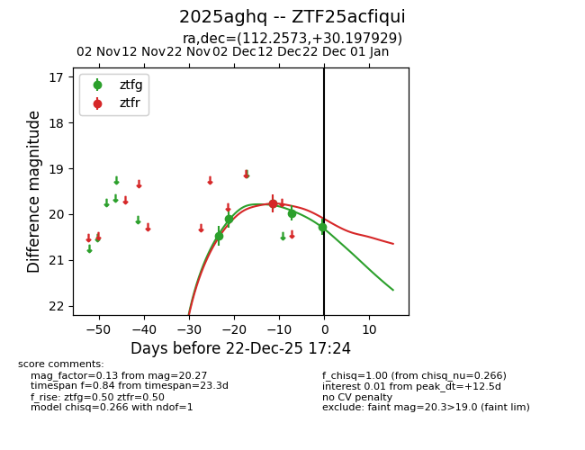
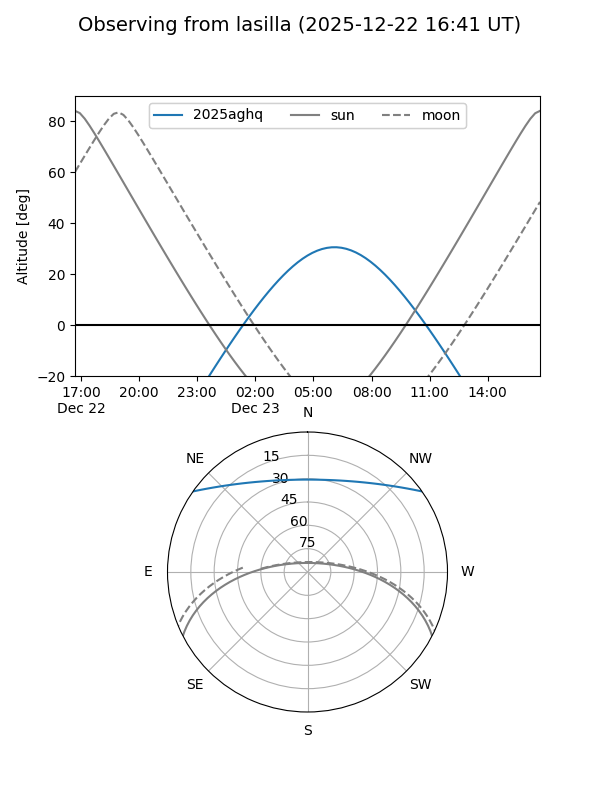
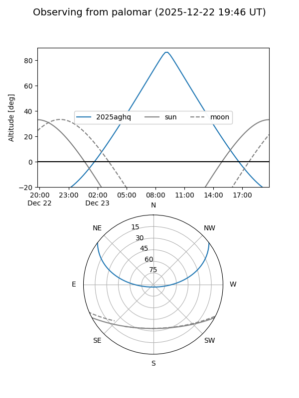
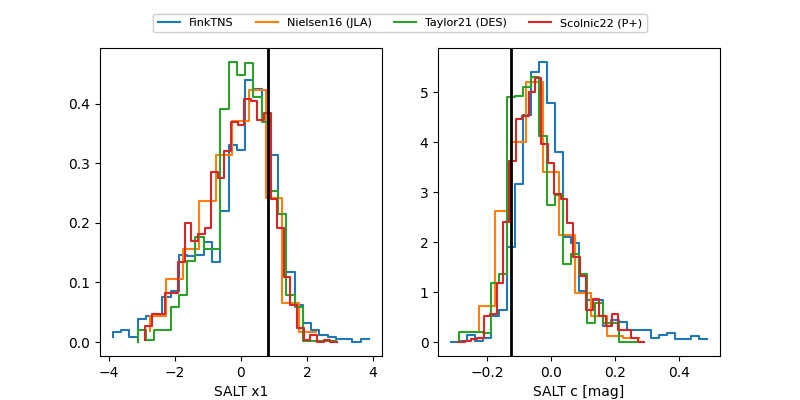

2025aghq
Target 2025aghq at 2025-12-22 17:26
Aliases and brokers:
FINK: fink-portal.org/ZTF25acfiqui
Lasair: lasair-ztf.lsst.ac.uk/objects/ZTF25acfiqui
ALeRCE: alerce.online/object/ZTF25acfiqui
TNS: wis-tns.org/object/2025aghq
YSE: ziggy.ucolick.org/yse/transient_detail/2025aghq
alt names
ZTF25acfiqui (ztf,fink_ztf)
2025aghq (tns,yse)
Coordinates:
equatorial (ra, dec) = 112.2573,+30.19793
equatorial (HMS+DMS) = 07:29:01.76,+30:11:52.55
galactic (l, b) = (188.7271,+20.79088)
Flags:
Photometry:
last ztfg=20.27, ztfr=19.77
5 ztfg, 1 ztfr detections
Lightcurve

Visibility


Additional plots
